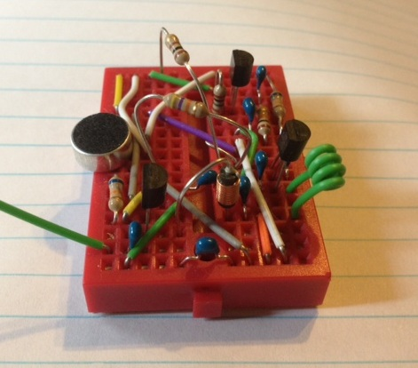
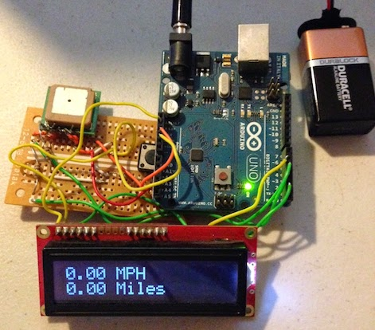
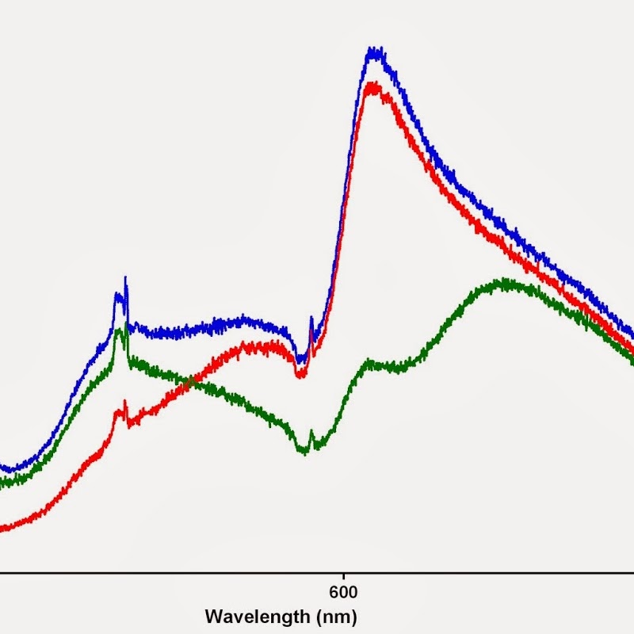

Last Circle
I built a simple 2D shooting game using only built-in Java libraries. I talk about the things I learned while designing the project as well as some issues that I encountered.
|
Pendulum Simulations
I discuss a method for rendering the animations of a few different physical systems using the Python libraries NumPy and SciPy and go into the physics that produces the equations of motion for them.
|
FM Radio Transmitter
I built a short range FM transistor radio and talk briefly about the theory of frequence modulation.
|

|
Ardunio GPS Tracker
I built a portable GPS speedometer/odometer with an Arduino microcontroller and a 16x2 LED screen. In this article I explain my deisgn as well as how to interface with one of these GPS modules.
|

|
Lightbulb Spectroscopy
An analysis of the emission spectra of basic house-hold lamps as well as the absorbance spectra of commercial food dyes.
|

|